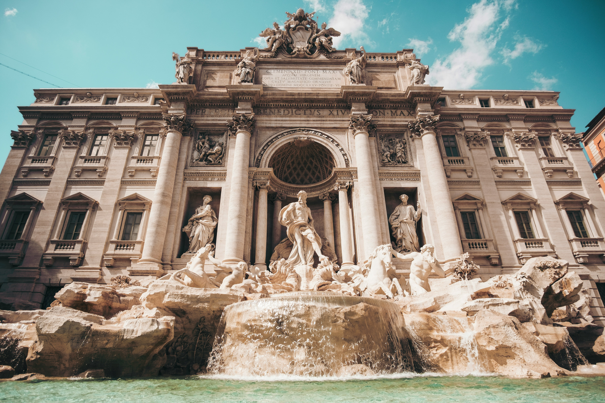

🇮🇹 Rome Itinerary
June 21 - June 23 (2 nights)

Overview
Dates: June 21 - June 23 (2 nights)
Arrival: Train from Milan
Base: Hyatt Regency Rome Central
Sunday (June 21): Arrival & Colosseum by Night
4:00 PM — Arrive in Rome
5:00 PM — Dinner at Ristorante Tullio
8:00 PM — Night time Colosseum stroll (Exterior)
Monday (June 22): Vatican, Colosseum & Trevi Magic
7:00 AM — Breakfast at hotel
8:30 AM — Go to Meeting Point for Colosseum (GYG)
9:45 AM — Colosseum Tour (GYG) ☑️
12:00 PM — Go to Vatican Meeting Point (GYG)
1:15 PM — Vatican Museum, Sistine Chapel, & St Peters Basilica (GYG) ☑️
7:00 PM — Trevi Fountain, Dinner @ Ristorante Trevi
Tuesday (June 23): Train to Amalfi 🚆
8:00 AM — Breakfast at hotel
9:30 AM — Altare Della Patria
11:00 AM — Go to Train Station
12:26 PM - 2:34 PM — Take train to Naples ☑️ Ryan Train Ticket Diego Train Ticket
2:34 PM - 2:40 PM — Walk straight to Metro inside the station (Line 1, it's connected)
2:40 PM - 2:55 PM — Metro to Municipio (2 stops, ~10 min)
2:55 PM - 3:00 PM — 5 Walk to Beverello
3:30 PM — Take ferry to Positano ☑️ Both Ferry Tickets